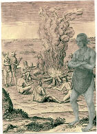

|
|
|
Close Help | ||||||||||||||
|
PAST TRIBAL CHIEFS |
|
MENU
Chiefs |
During our research of the Taptico and Tapp connection, we found several names of past Tribal Chiefs or Great men of the Wicocomico Nation. The list will enter the title used for that particular period of time. From the earliest known leader to the last leader; William Taptico, various titles were used, and some may have been misinterpreted by the English when recording some action. We will also list names of various Wicocomico Indians that were mentioned. Some names may be a clue to a persons Native American Heritage.However keep in mind that many of the indians changed their Indian names to the name of an English friend, or an English employer, or if they were slaves or indentured servants to the names of the English that owned them. We also have to keep in mind of the possibilty that many of the tribes merged with the larger tribes in Virginia and some may have crossed into North Carolina and joined the Cherokees. Currently Virginia has nine tribes that survived the colonization of Indian land.Chickahominy, Eastern Chickahominy, Rappahannock, Mattaponi, Upper Mattaponi, Monacan, Nansemond ,Pamunkey and Wicocomico.As we have stated previously, it is our intent to reestablish the Wicocomico Indian Nation. There are hundreds of Wicocomico descendants through out the United States that were disenfranchised because of the English Colonists failure to appoint or allow the hereditary heirs take reign of the Wicocomico Nation when King William Taptico died in 1719. If the natural process had been allowed to take place, the Wicocomico may very well have remained in existence with out a break.
TRIBAL CHIEFS---1655--1719
Weroance-------------1655

Other names that were identified other than the above are, Mosco, Nordas,and George Taptico.
The Curtis name is connected with the Taptico name in several actions and may be
a Wicocomico family name or married into the Taptico family or vice versus. We will make
this assumption and research as such. It also appears that many of the Chief,s and Great Men had taken on English names by the 1670s. One Great man that requires investigating is "Robert the Great Man", Robert could possibly be another Wicocomico family name. We are not sure where George Taptico fits in our lineage, however it is believed that he may have been William I's brother, if not a brother, then a relative. It would be unlikely that a tribe would have two families with the same name, especially the ruling family. If any reader feel they are descendants of the above names , feel free to email.
| ||||||||